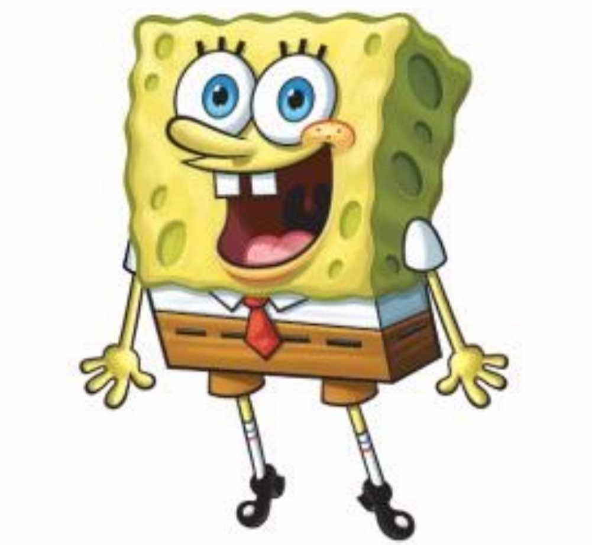
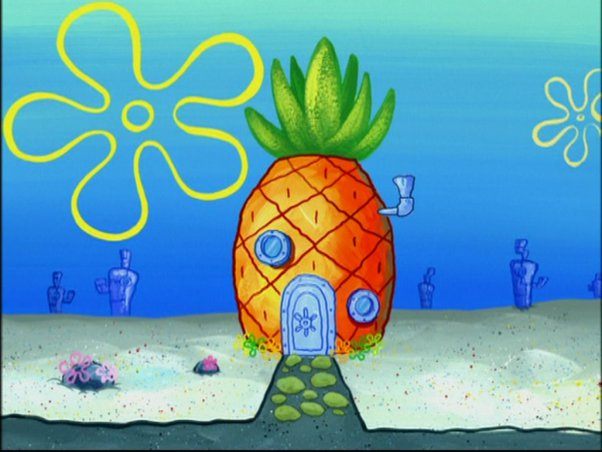
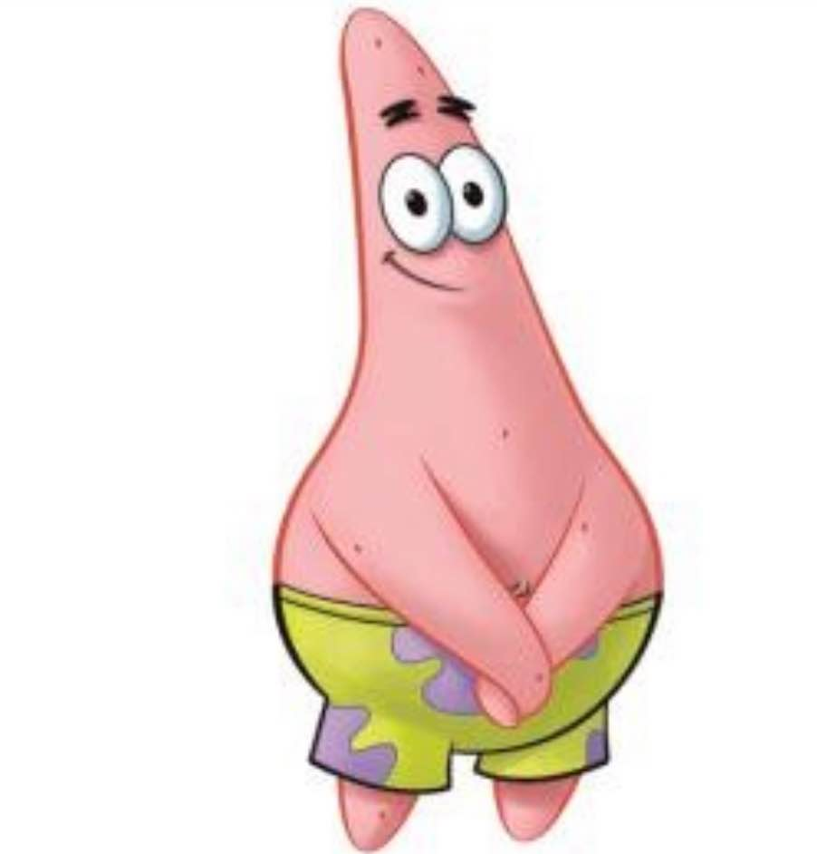
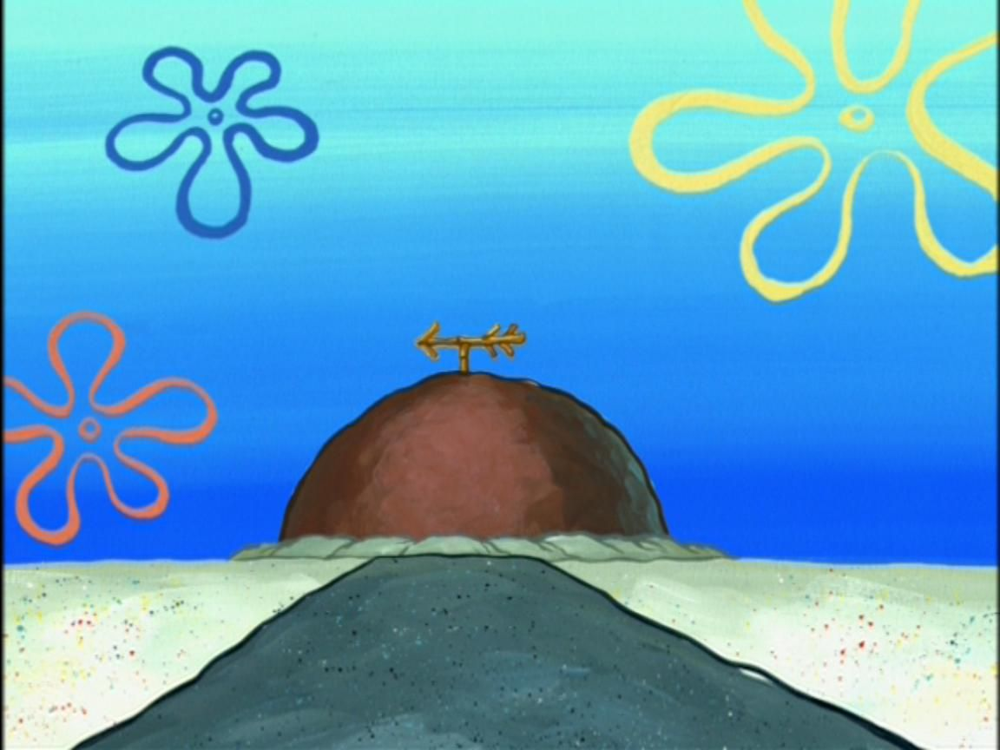
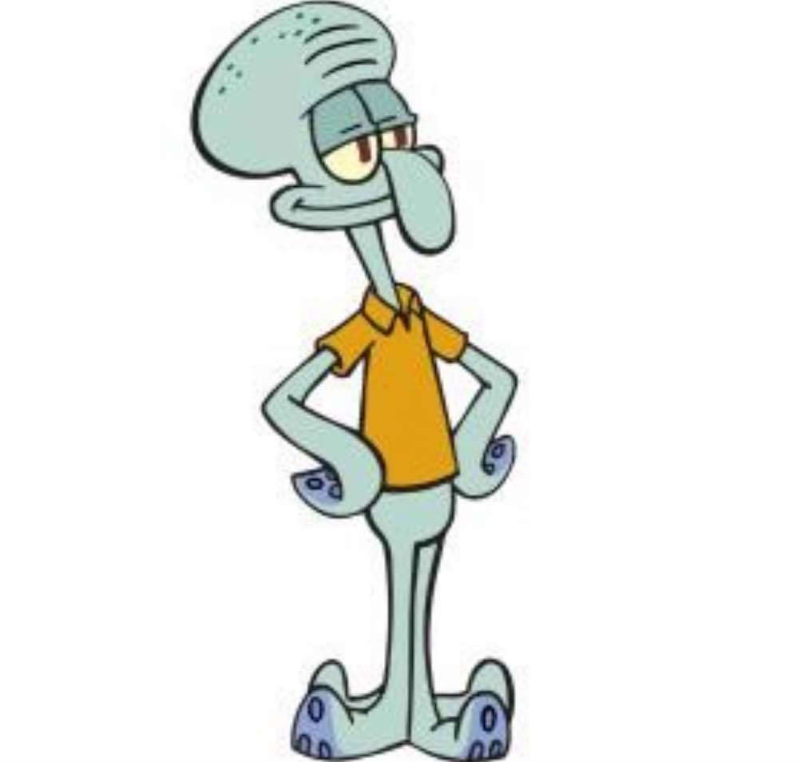
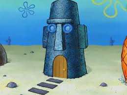
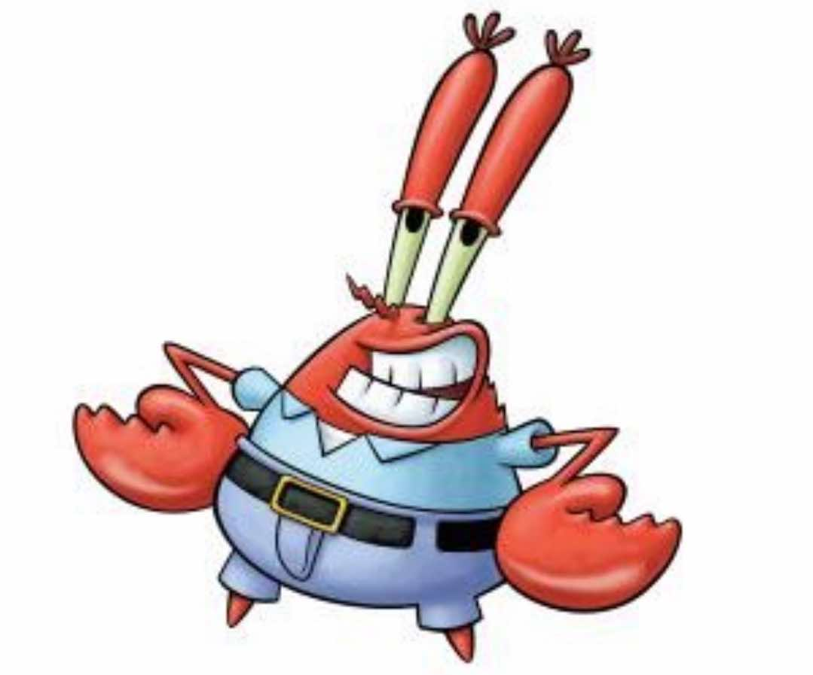
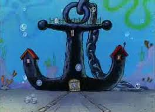
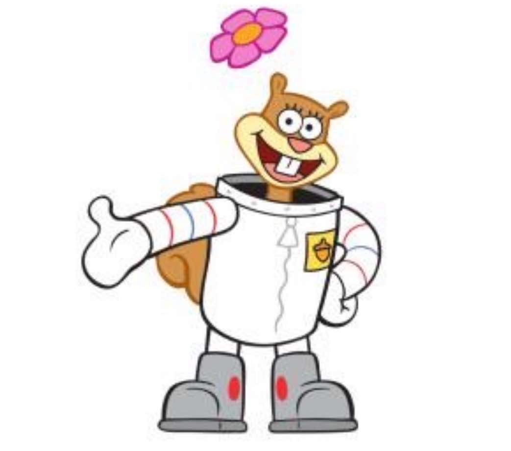
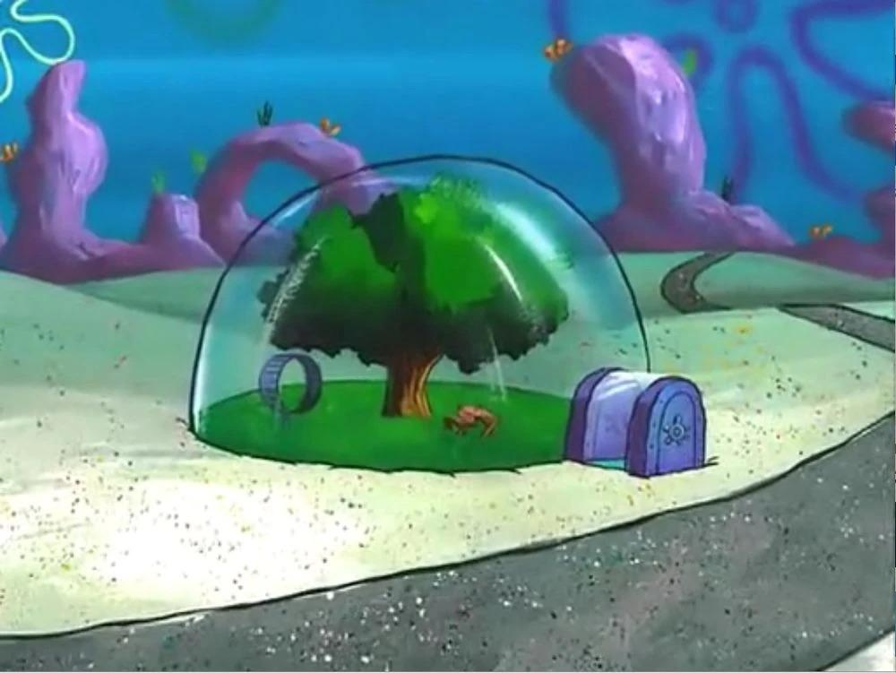

| Image | Description | House |
|---|---|---|
|  | Spongebob Squarepants The main character of the show. Spongebob is a lovable sponge who works at the Krusty Krab. He can be annoying sometimes but he'll always be there to cheer you up. |
The Pineapple  |
|  | Patrick Star Spongebob's best-est friend. Patrick can be dumb but very funny. He loves eating Krabby Patties and Jelly-Fishing with Spongebob for his free-time. He also thinks mayonaise is an instrument! |
The Rock  |
|  | Squidward Tentacles The guy in between Pat and Sponge. Squidward is Spongebob's long-time co-worker and neighbor. He gets easily annoyed by the two and he is not the most joyful squid. He loves playing the Clarinet. |
The Moai  |
|  | Mr. Krabs Eugene Krabs is the greediest of his kind in the sea. He owns the Krusty Krab and loves money as much as he loves his daughter Pearl. He protects the "Secret Formula" because it is the sacred recipe of the Krabby Patty. |
The Anchor  |
|  | Sandy Cheeks All the way from Texas, Sandy is the squirrel that lives under the sea. She is a scientist and she lives in a dome which requires oxygen. She also loves karate, especially when she spars with Spongebob. |
The Treedome  |